Musica donde el ritmo pegadizo y sus canciones terminan marcando tus gustos musicales
Regresar al Inicio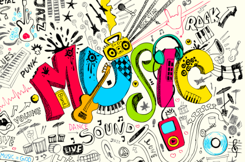
Al igual que el genero musical Rock, la musica pop tuvo sus origenes en la decada de 1950, como una alternativa mas suave al Rock & Roll, buscando atraer a una poblacion de oyentes de edad joven, es un genero electrico que ocupa la influencia de diferentes estilos musicales como urban, el dance, el rock, la música latinoamericana, el rhythm and blues o el folk.
Emplea elementos esenciales como la corta a media duracion de sus canciones, escritas en un formato básico (a menudo la estructura estrofa-estribillo), así como el uso habitual de estribillos repetidos, de temas melódicos y ganchos. La instrumentación se compone habitualmente de guitarra, batería, bajo, guitarra eléctrica, teclado, sintetizador, etc
La musica Pop como termino se origino en el año de 1926, usado en el sentido para describir una pieza musical que tenga atractivo popular. Se ha utilizado para describir un genero diferente que mencionado anteriormente es popular en las poblaciones jovenes.
A lo largo de su existencia, el pop ha tenido diferente influencias en su ritmo musical ya que en sus comienzos este utilizo una forma de balada sentimental para obtener su forma como tal, obteniendo asi del góspel y el soul su uso de las armonías vocales, del jazz, el country y el rock su instrumentación, de la música clásica su orquestación, del dance su tempo, de la música electrónica su acompañamiento, del hip hop elementos rítmicos, y recientemente ha incorporado también los pasajes hablados del rap.
Considerado como el Rey del Pop en la actualidad
Inicio su carrera en los Jackson 5 como integrante, y paso a ser el mayor exponente del pop en la actualidad, su album "Thriller" es el album mas vendido de la historia.
En la actualidad su album "Thriller" lanzado en 1982, ha vendido entre 70-100 millones de copias.
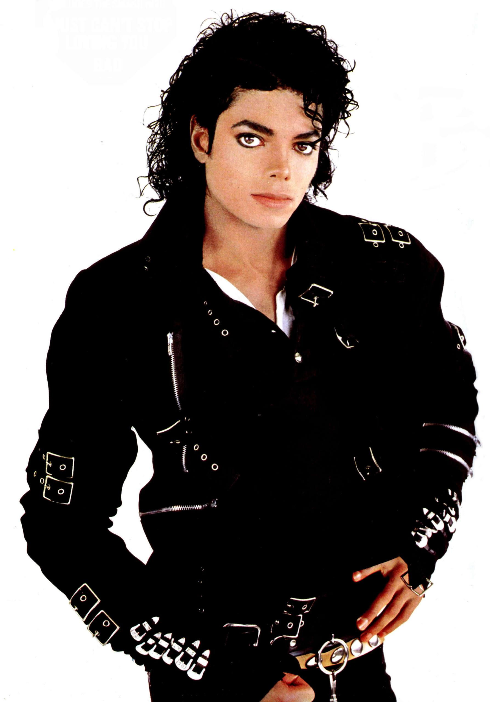
Peter Gene Hernandez, mejor conocido como Bruno Mars.
Es considerado como uno de los artistas mas influyentes y flexibles en el ambito de la musica pop, ya que utiliza diferentes tecnicas como la incorporacion de sonidos inspirados en el reggae, funk, R&B, hip hop, rock, entre otros.
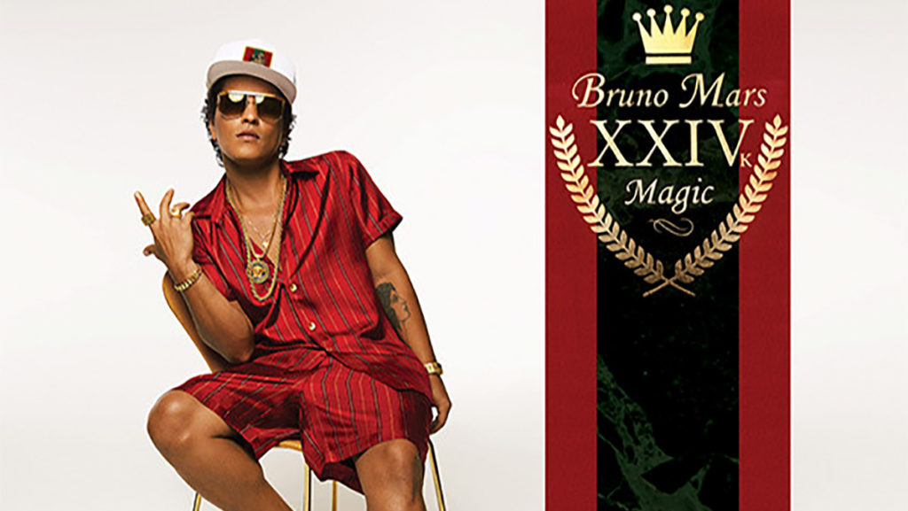
Nacida el 16 de Agosto de 1958, considerada como icono popular de la musica del siglo XX y siglo XXI
Es generalmente considerada tambien como la Reina del Pop, debido a sus contribuciones musicales, ha vendido más de 400 millones de producciones musicales, con lo que establece el récord mundial de «la solista más exitosa y de mayores ventas musicales de todos los tiempos».
Entre sus numerosos reconocimientos figuran siete premios Grammy, dos Globos de Oro, veinte MTV Video Music Awards y diecisiete Japan Gold Disc Awards, así como su inclusión en el Salón de la Fama del Rock and Roll en su primer año de elegibilidad.
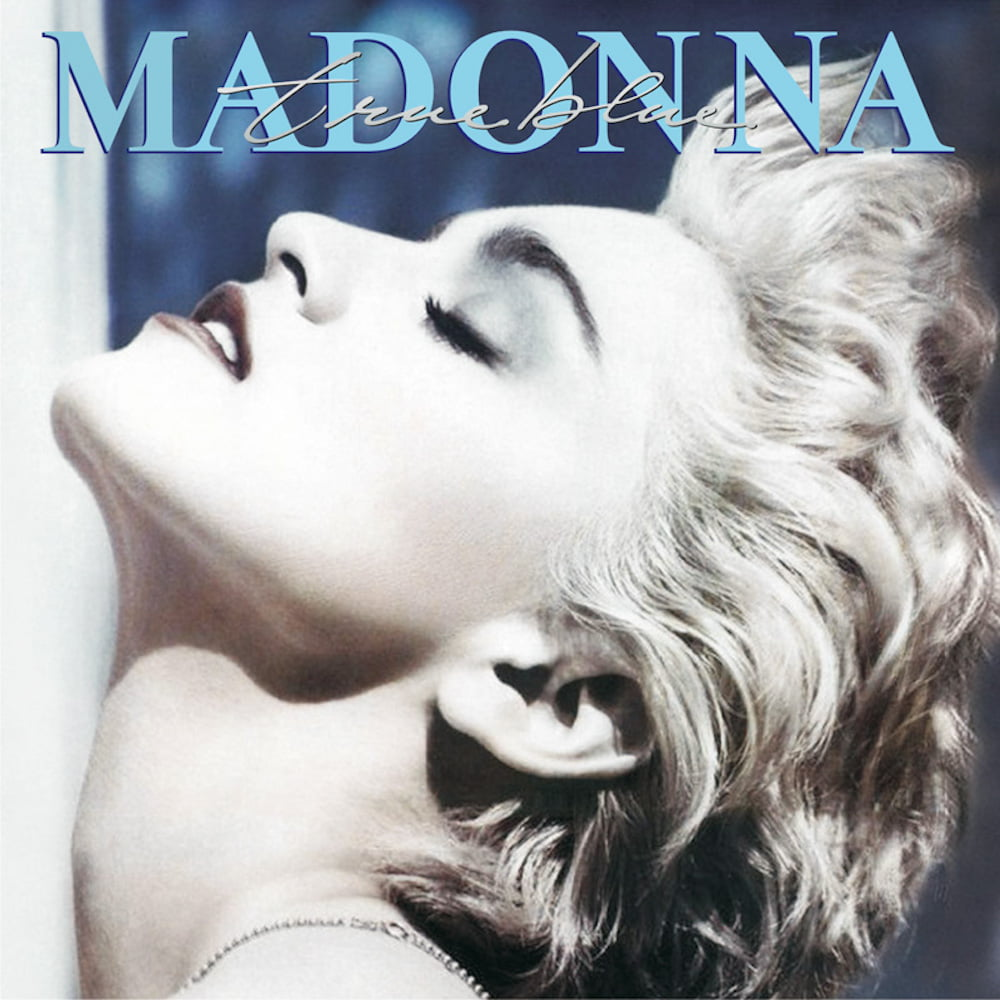
Desde sus origenes la musica Pop, ha buscando siempre atraer a un publico joven, con sus influyentes artistas y ritmos pegadizos han generado un impacto en el recuerdo musical de varias poblaciones contemporaneas a los artistas mas exponentes de este genero musical.
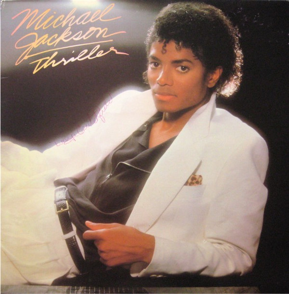
Michael Jackson (1982)
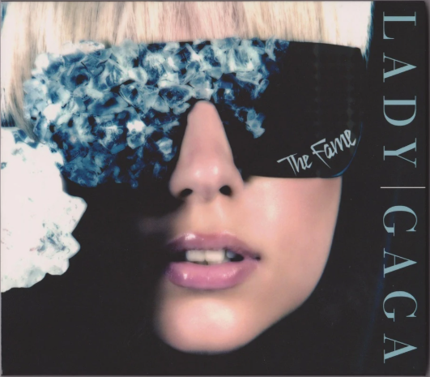
Lady Gaga (2008)
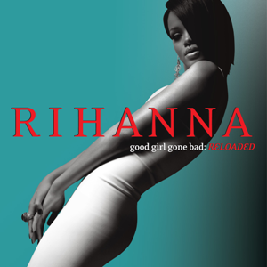
Rihanna (2007)
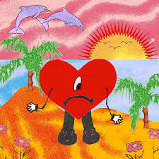
Bad Bunny (2022)
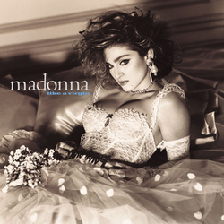
Madonna (1984)
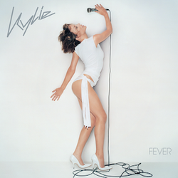
Kylie Minogue (2001)
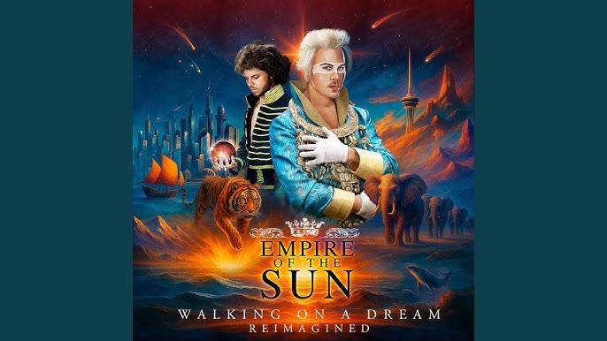
Empire of The Sun (2008)
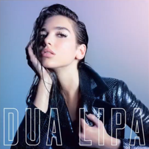
Dua Lipa (2017)
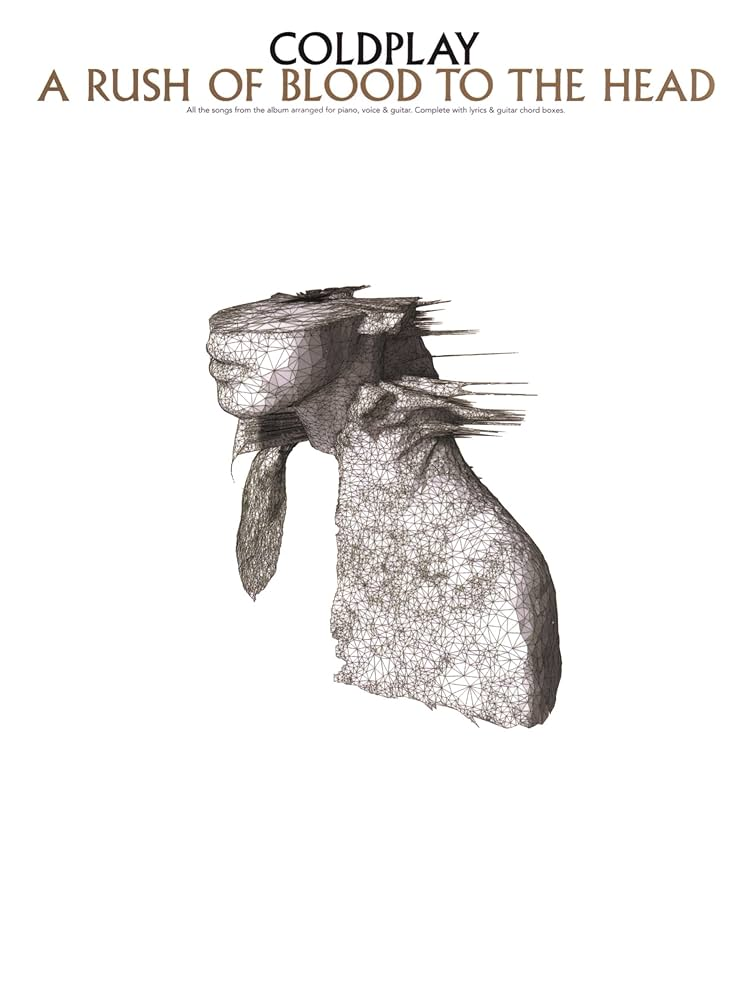
Coldplay (2002)
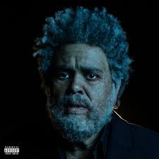
The Weeknd (2022)
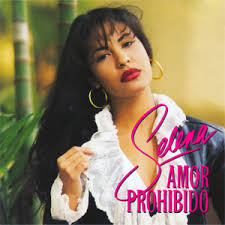
Selena (1994)
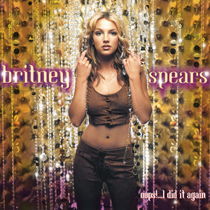
Britney Spears (2000)